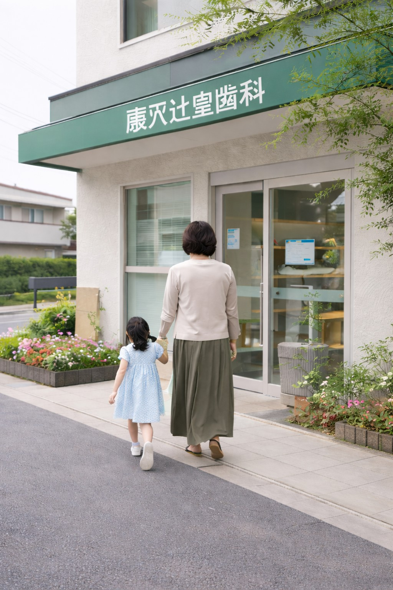

無理に削る治療はしません
説明と選択肢を提示したうえで治療を行います。
痛みも空気も、我慢させない。
当日のご相談も可能です
24時間受付中
藤沢市辻堂で、怖くない歯科医院をお探しの方へ。
大丈夫です。
私たちは「怖さ」を前提に診療しています。
説明と選択肢を提示したうえで治療を行います。
不安を感じたら遠慮なく合図してください。
来られなかった理由も含めて受け止めます。
ご不安がある方は、まずはお電話ください。
📞 お電話で予約するMESSAGE
子どもの頃、歯医者が本当に苦手でした。 何をされるか分からない不安、痛みへの恐怖―― あの気持ちは、大人になっても忘れられません。
だからこそ、治療の前には必ず説明をし、 途中で止められる安心感を大切にしています。 「ここなら大丈夫かも」と思える場所を、 藤沢・辻堂につくりたい。それが私の原点です。
院長の想いを見るCOMMUNITY

辻堂駅徒歩5分。土曜も診療。
この街で長く通える歯医者を。
キッズスペース完備。
お子さまも、おじいちゃんも。
専任衛生士制で継続管理。
痛くなる前に通う習慣を。
ACCESS
〒251-0047
神奈川県藤沢市辻堂1-1-1
JR東海道本線「辻堂駅」東口より徒歩5分
平日 9:30〜13:00 / 14:30〜19:00
土曜 9:30〜13:00 / 14:30〜17:00
休診 木曜・日曜・祝日
お電話：0466-00-0000
LINE：LINEで予約

スマートフォンで読み取ってください